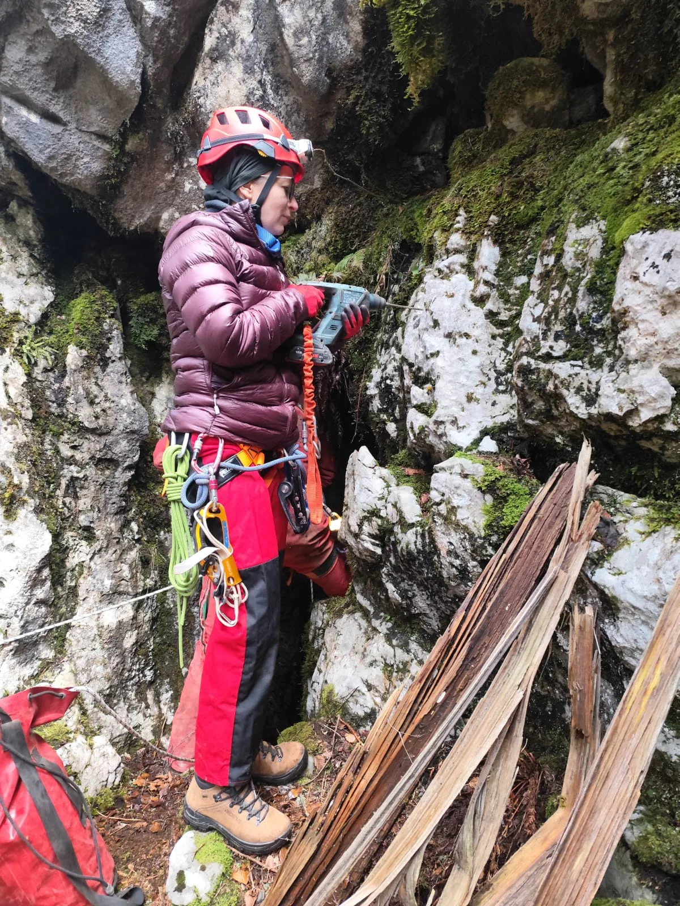

Kombi u snijegu
Gotovo je, gotovo. Tko bi očekivao da bi se istraživanje jame od 80 metara dubine pretvorilo u opetovano dolaženje u tri različita vikenda? Vjerojatno nitko, ali eto, potreba za proširivanjem i nedostatak opreme je…

Napisao: Mislav Sajko
Fotografije: Mislav Sajko, Dragana Rajković, Mia Šepčević
Gotovo je, gotovo. Tko bi očekivao da bi se istraživanje jame od 80 metara dubine pretvorilo u opetovano dolaženje u tri različita vikenda? Vjerojatno nitko, ali eto, potreba za proširivanjem i nedostatak opreme je učinilo svoje.
Glavni akteri: Vedran (Fero), Dragana, Rene, Lea, Mia i Mislav
Mjesto radnje: Lišnjak, 15 km južno od Sungera kraj Mrkoplja
Vrijeme radnje: 3 vikenda od studenog 2024. do 1.3.2025.
Jama Lišnjak, koja se nalazi na nekih 15-ak km južno od Sungera kod Mrkoplja, se istražuje još od 2014. godina kada je nekolicina naših Velebitaša s pripadnicima Speleološke sekcije HPD Bijele stijene istraživala to područje i pritom našla 5 speleoloških objekata. Neki su bili istraženi, a nekima je nedostajalo podataka kao što je opis puta, fotografija ulaza ili nacrt. Prošle godine u studenom smo Lea, Rene i ja odlučili pronjuškati taj dio Gorskog kotara. Plan je bio fotografirati ulaze, provjeriti upitnike i ponoviti nacrte kod nekih. Za kraj dana ostavili smo Lišnjak i njegove čari.
Iako je nama Velebitašima glavni teren istraživanje Sjevernog Velebita za vrijeme ekspedicije, Gorski kotar budi jednu dozu misticizma. Jednom kada se uđe u dubine tih crnogoričnih šuma, tišina i mir preplave sva osjetila. Čovjek može steći dojam da je šuma prazna i da se samo koji cvrkut ptice čuje, ali može zavaravati. Ali dojam o šumama Gorskog kotara nekom drugom prilikom, povratak na jamu.
Brzo smo našli Lišnjak i krenuli opremati. Nije dugo trajalo dok nismo došli do dna, koje je zapravo bilo prvo dno. Lea se spustila iza mene i ja sam samo komentirao: „Hm, to je to, dakle možemo krenuti crtati.“ Lea se samo namrštila i pokazala na bočni kanal iznad nas. Mislim da je svakom speleologu dobro poznat osjećaj kad vidi neki novi kanal. Uzbuđenje momentalno raste. Preopremili smo za taj drugi kanal i spustili smo se do sljedećeg dna. Iste misli su nam prolazile:“Hm, to je to…“ Ali mali uski portal nas je zvao dalje. Uzbuđenje ponovno raste. Jama ide dalje! S obzirom da smo bili kratki s vremenom bacili smo samo kratko pogled kroz rupu u stijeni gdje se osjetilo jako strujanje zraka. Rekli smo si: “Definitivno se vraćamo!“
Nekoliko mjeseci kasnije Fero, Dragana, Rene i ja smo ponovno na istom mjestu. Netko nas je odlučio sabotirati u našem naumu. Stablo je palo. Sva sreća nismo još morali daleko voziti. Izašli smo i krenuli u akciju. Nakon što smo provjerili neke objekte u blizini, opet smo si ostavili Lišnjak kao šećer na kraju. Jamu opremamo, spuštamo se do suženja i krećemo širiti mali otvor. „Kuc-kuc“ odzvanja jamom. Za neke poput Renea i Dragane je prolazak bio mačji kašalj, ali za Feru i mene mali problemčić. Drž nedaj je bio lajtmotiv našeg istraživanja Lišnjaka. U jednom trenutku ostajemo bez opreme i rekli smo si da je vrijeme za povratak. Odlučili smo ostaviti opremu sa zaključkom da ćemo se ubrzo vratiti 2 tjedna kasnije.
Nije bilo 2 tjedna, već 3 tjedna, jer smo čekali da se snijeg otopi. Koji se otopio, ali do 1000 metara nadmorske visine. Ovo je bio i jedan od testova za naš kombi (radnog naziva „Miško“) kako će voziti po snijegu. Položio je s odličnim i dopelali smo se do jame i nazad. Prethodno u svim Velebitašima dobro znanom kafiću Sušilu sjeli smo Mia, Lea, Rene i ja na kavu/čaj i pojeli doručak. Usput smo i dogovorili plan, kako i priliči. U 4 krećemo izlaziti, gotovi ili ne. Plan je funkcionirao, krenuli smo u 15 do 4 s crtanjem zadnjeg komada jame i time smo ispoštovali plan. Na kraju Lišnjak ima 130 metara duljine i 80 metara dubine.
Čovjek bi pomislio da smo do 6 vani. U speleologiji ne postoje fiksna vremena izlaska i svaki plan ili dio plan se na ovaj ili onaj način izjalovi. Suženja, borba s opremom, umor ili vrijeme čine svoje. Hoće li nas spriječiti u daljnjim istraživanjima? Naravno da ne. Nadamo se skorom povratku u Gorski kotar i novim metrima koje se skrivaju u njegovim dubinama.